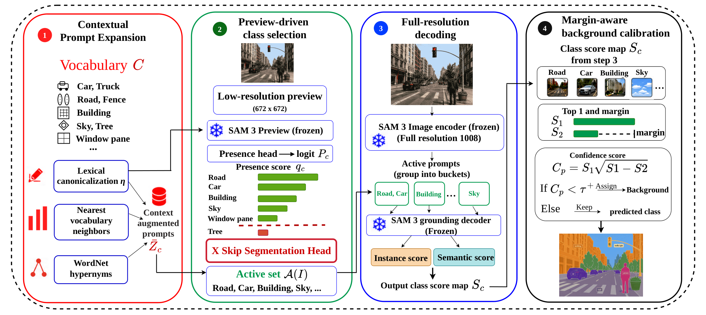
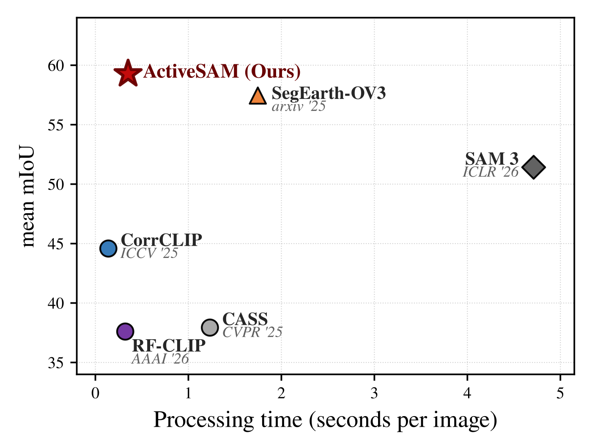
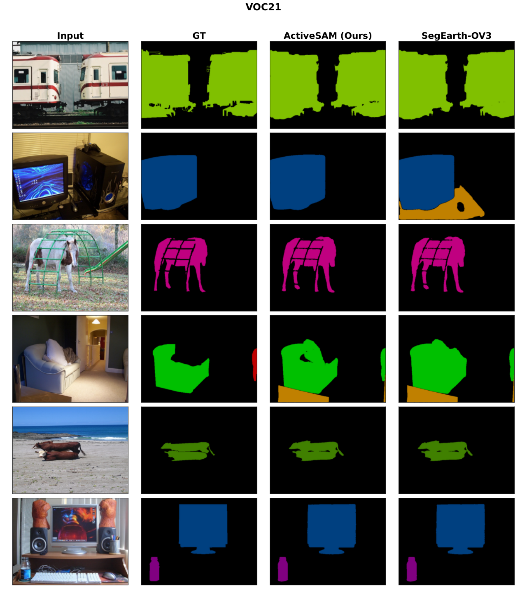
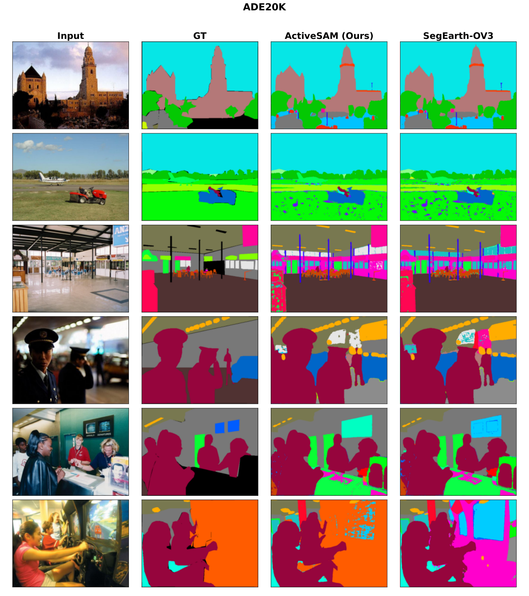
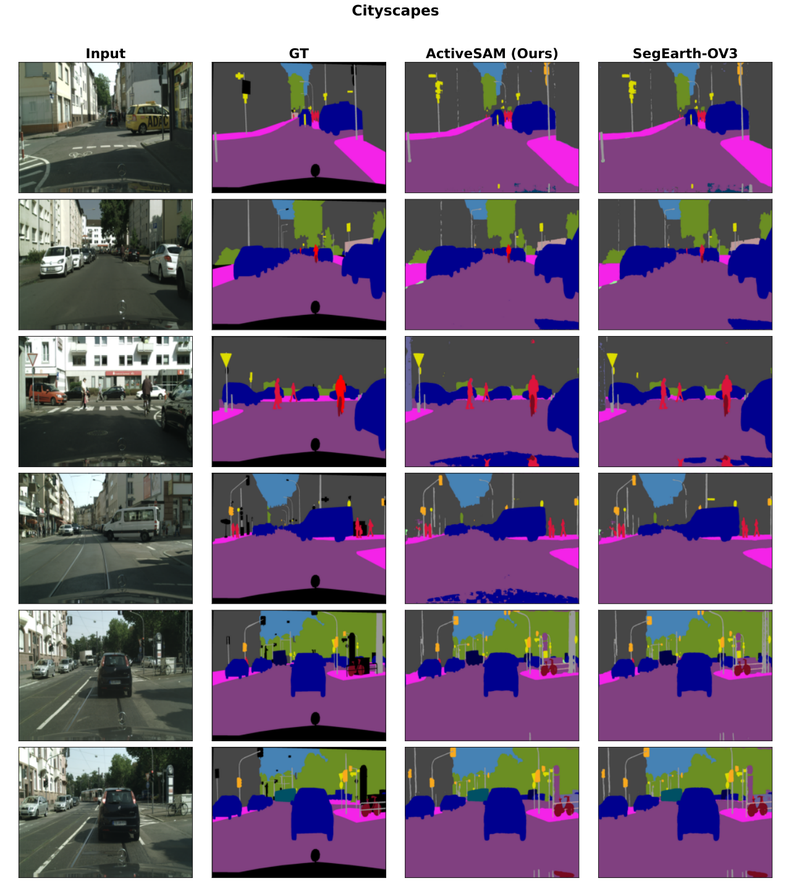
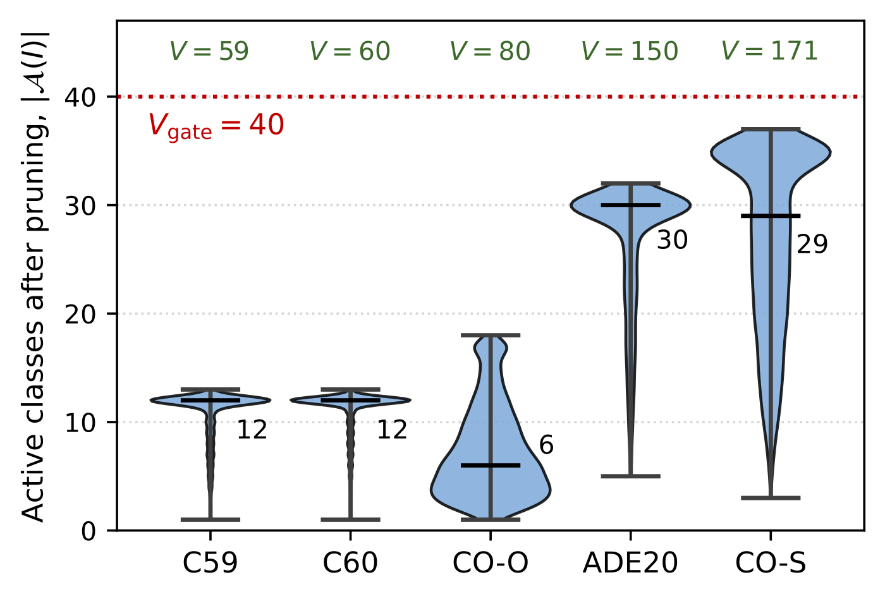

§030 秒速覽
四個關鍵數字，抓住全文骨架
§1問題：詞彙表是資料集的，圖片是單張的
open-vocabulary semantic segmentation（OVSS）的系統瓶頸
OVSS 的設定是：測試時才給你一份詞彙表，模型要對表上每個類別輸出 dense mask，不重訓、不收新標註。SAM 3 讓這件事變得直接——它吃 concept prompt（名詞片語）、回傳對應 mask，還用 presence head 把「認不認得」跟「在哪裡」解耦。但把 SAM 3 直上 OVSS 有個結構性浪費：全解析度的 prompt-conditioned 解碼成本隨詞彙大小 V 線性增長，而任何一張圖實際在場的類別遠小於 V。ADE20K 有 150 類、COCO-Stuff 有 171 類，原生 SAM 3 在這兩個資料集上 FPS 只有 0.13 和 0.11。
| 路線 | 代表方法 | 侷限（論文數據） |
|---|---|---|
| CLIP 系 training-free | SCLIP、ProxyCLIP、CorrCLIP、ReME | image-level 對齊硬轉 pixel-level，邊界粗；對影像劣化極脆——Gaussian noise 下 CorrCLIP 六資料集平均 54.8 → 16.0（§4 Table 2） |
| SAM 3 直上 OVSS | SAM 3（ICLR'26） | mask 品質強（平均 57.5），但每類都要走一次全解析度解碼，大詞彙 FPS 0.11–0.32 |
| SAM 3 + 事後 presence 過濾 | SegEarth-OV3 | dual-head 融合＋presence 事後濾除缺席類，精度此前最強（63.9），但仍對全詞彙解碼——presence 算完了才丟，算力已經花掉 |
| 訓練式 OVSS | Talk2DINO、CLIP-DINOiser 等 | 需要額外訓練或對齊層，詞彙一變就得重來；平均 mIoU 也只到 46.3 |
ActiveSAM 的切入點：SAM 3 明明已經有一個便宜的「這個概念在不在圖裡」訊號（presence head），為什麼要等全解析度解碼完才用它？把它搬到解碼之前當路由訊號，計算結構就從「解碼 V 類」變成「解碼 |𝒜(I)| 類」。
§2方法：presence 從過濾器變路由器
四個模組，全部作用在推論期，SAM 3 權重一動不動

兩個容易被略過的細節
Vgate=40 的雙重角色。小詞彙資料集（VOC 20/21、Cityscapes，V≤40）直接旁路預覽、全詞彙解碼——避免在沒得剪的地方硬剪掉分；大詞彙資料集則以 40 為 active set 的硬上限。一個參數同時管「要不要剪」和「最多剪剩多少」，且 8 個資料集共用。
MABC 用的是 margin，不只是絕對分數。傳統做法是 top-1 分數低於閾值就判背景，一維規則看不出「第一名有沒有明顯甩開第二名」。MABC 的信心值 c(p) = s₁·√(s₁−s₂) 要同時滿足「分數高」和「margin 大」才算數；閾值 τ⁺=t^γ 沿用各資料集既有的背景閾值 t，只加一個全域指數 γ=1.25，不引入任何 per-dataset 新參數。
§3實驗設定：8 基準、一組超參數、一張 5090
zero-shot 協定：無目標資料集訓練、無 oracle 類別標籤、無 TTA
基準：Pascal VOC 20/21（21 含背景類）、Pascal Context 59/60、COCO-Stuff（171 類）、COCO-Object（80 類，stuff 視為背景）、Cityscapes、ADE20K（150 類）。對手：CLIP 系 training-free（SCLIP、ProxyCLIP、CorrCLIP、ReME、RF-CLIP、Trident 等）、SAM 3 原生 pipeline、SegEarth-OV3，另附訓練式方法（GroupViT、TCL、Talk2DINO 等）做參照。指標為 mIoU；速度比較把各方法官方實作重跑在同一張 NVIDIA RTX 5090 上。
超參數全域一組、不做 per-benchmark 調參：預覽解析度 rp=672、全解析度 rf=1008、Vgate=40、bucket K=32、分位數 β=0.80、鄰居 token Ms=2、上位詞 token Mt=2、MABC 指數 γ=1.25、instance mask 信心閾值 0.3。backbone 為官方 SAM 3（Perception Encoder-L+）。詞形修復規則（47 條：28 條複合詞拆分、12 條詞序修復、7 條歧義替換）在評估前就固定，不看圖、不看標註、不看驗證分數。
§4主結果：精度全面持平或領先，速度快 5 倍
綠字 = 該欄最佳（論文 Table 1/2/3；訓練式與 CLIP 系完整列表見原文）

| 方法 | V21 | P60 | C-O | V20 | P59 | C-S | City | ADE | 平均 |
|---|---|---|---|---|---|---|---|---|---|
| Talk2DINO（訓練式最佳） | 65.8 | 37.7 | 45.1 | 88.5 | 42.4 | 30.2 | 38.1 | 22.5 | 46.3 |
| CorrCLIP（ICCV'25） | 76.7 | 44.9 | 49.4 | 91.5 | 50.8 | 34.0 | 51.1 | 30.7 | 53.6 |
| ReME（ICCV'25） | 82.2 | 44.6 | 48.2 | 93.2 | 53.1 | 33.3 | 59.0 | 28.2 | 55.2 |
| SAM 3（ICLR'26） | 81.9 | 46.1 | 65.4 | 88.9 | 50.0 | 33.3 | 62.3 | 31.8 | 57.5 |
| SegEarth-OV3 | 79.8 | 53.4 | 72.0 | 96.8 | 59.2 | 42.8 | 69.7 | 37.6 | 63.9 |
| ActiveSAM | 83.8 | 55.4 | 72.0 | 97.0 | 60.1 | 44.4 | 69.7 | 40.0 | 65.3 |
mIoU（%）。V=VOC、P=Pascal Context、C-O/C-S=COCO-Object/Stuff。ActiveSAM 八欄全數最佳或並列最佳（C-O、City 兩欄與 SegEarth-OV3 同分）。
速度：大詞彙才是主戰場
| 方法 | 指標 | ADE20K | C59 | C60 | CO-O | CO-S | 平均 |
|---|---|---|---|---|---|---|---|
| SAM 3 | mIoU | 31.8 | 50.0 | 46.1 | 65.4 | 33.3 | 45.3 |
| FPS | 0.13（14.8×） | 0.32（12.8×） | 0.32（12.6×） | 0.24（13.3×） | 0.11（15.1×） | 0.22（13.5×） | |
| CASS | mIoU | 20.4 | 40.2 | 36.7 | 37.8 | 26.7 | 32.4 |
| FPS | 0.70（2.7×） | 0.81（5.1×） | 0.81（5.0×） | 0.68（4.7×） | 0.63（2.6×） | 0.73（4.1×） | |
| SegEarth-OV3 | mIoU | 37.6 | 59.2 | 53.4 | 72.0 | 42.8 | 53.0 |
| FPS | 0.35（5.5×） | 0.86（4.8×） | 0.84（4.8×） | 0.63（5.1×） | 0.31（5.4×） | 0.60（5.0×） | |
| ActiveSAM | mIoU | 40.0 | 60.1 | 55.4 | 72.0 | 44.4 | 54.4 |
| FPS | 1.92 | 4.10 | 4.04 | 3.19 | 1.66 | 2.98 |
五個大詞彙基準（論文 Table 3）。括號 = ActiveSAM 對該方法的加速倍率。對 SegEarth-OV3 為 4.8–5.5×，對原生 SAM 3 最高 15.1×。
劣化影像：SAM 3 系穩、CLIP 系崩
| 六資料集平均 mIoU | Clean | Gaussian noise | Motion blur | JPEG 壓縮 | Fog |
|---|---|---|---|---|---|
| ActiveSAM | 65.03 | 46.48 | 53.96 | 57.90 | 62.07 |
| SegEarth-OV3 | 63.34 | 44.92 | 52.88 | 56.29 | 60.69 |
| CorrCLIP | 54.8 | 16.02 | 35.21 | 43.57 | 42.63 |
| RF-CLIP | 47.3 | 18.33 | 34.51 | 35.24 | 37.36 |
ImageNet-C 四種代表性劣化（感測噪聲、運動模糊、傳輸壓縮、天候）下，ActiveSAM 每一項都是第一，對 SegEarth-OV3 的 +1～2 領先跟乾淨影像時一致；CLIP 系直接崩盤——CorrCLIP 在 Gaussian noise 下從 54.8 掉到 16.0。論文的解讀：SAM 3 的 text-grounded 解碼器對劣化輸入穩，而 CLIP 特徵一有噪聲就失準（CorrCLIP 雖也用 DINO/SAM 2，但類別判斷仍走 CLIP）。剪枝沒有放大劣化風險——presence 預覽在劣化下依然選對類別。



§5消融與負結果：剪枝的精度貢獻是零
速度歸剪枝、精度歸 CPE/MABC——論文自己把帳拆開了
| 組態 | V21 | P60 | C-O | V20 | P59 | C-S | City | ADE | 平均 | Δ vs Full |
|---|---|---|---|---|---|---|---|---|---|---|
| Full ActiveSAM | 83.8 | 55.4 | 72.0 | 97.0 | 60.1 | 44.4 | 69.7 | 40.0 | 65.3 | — |
| − MABC（僅 CPE） | 82.9 | 54.9 | 71.9 | 97.0 | 60.1 | 44.4 | 69.7 | 40.0 | 65.1 | −0.2 |
| − CPE（僅 MABC） | 81.0 | 54.6 | 72.0 | 96.7 | 59.0 | 43.2 | 69.4 | 38.5 | 64.3 | −1.0 |
| − 剪枝（全詞彙解碼） | 83.8 | 55.3 | 72.0 | 97.0 | 60.4 | 44.3 | 69.7 | 39.8 | 65.3 | 0.0 |
| SegEarth-OV3（參照） | 79.8 | 53.4 | 72.0 | 96.8 | 59.2 | 42.8 | 69.7 | 37.6 | 63.9 | −1.4 |

值得補一句：論文沒有回報 β（分位數）、Vgate、K（bucket 大小）、γ 的敏感度掃描，也沒有 CPE 內部（鄰居 token vs 上位詞 token）的細部拆解——超參數是「一組全域值」的宣稱雖然乾淨，但這些值怎麼選出來的、對它們多敏感，原文未載明。預覽階段本身的耗時佔比也沒有單獨列出。
§6限制：論文自己承認的，和沒說的
Limitations 一節 + Societal Impacts 附錄，加上兩條本站補充
- 低解析度預覽會漏小物件（論文自列）。特別小或被遮擋的物件在 672² 預覽下 presence 分數可能過低，類別被提前剪掉，全解析度解碼器連嘗試的機會都沒有。附錄 A 更直白：這是一個安全性 trade-off——若預覽漏掉被遮擋的關鍵物件，最終輸出將完全跳過它，部署在自駕、醫療等安全關鍵場景前必須嚴格評估此失效模式。
- CPE 綁死英文 WordNet（論文自列）。詞形修復 47 條規則 + WordNet 上位詞都是英文中心的設計，遇到專科術語（醫療、工業）或非英語詞彙可能失效。
- 加速只存在於大詞彙（本站補充）。V≤40 的資料集（VOC、Cityscapes）整個剪枝機制被 Vgate 旁路，收益為零；而大詞彙下 active set 中位數約為 V 的 17–20%（COCO-Object 例外），加速上限實務上就在 5–6× 附近——場景再簡單，也剪不到更低。且預覽仍需對全詞彙算一次 presence，詞彙持續膨脹時這筆前置成本會回來，論文未討論其縮放行為。
- 單卡單張的速度數字（本站補充）。FPS 全部在一張 RTX 5090、逐張推論下量測；batch 推論、串流部署、或消費級/嵌入式 GPU 上 bucket 多工的效益是否維持，原文未載明。
§7對煎蛋機器人感知任務的啟示
讀後解析——這部分是本站觀點，不是原文內容
ActiveSAM 是一篇「系統論文披著方法論文的皮」：不動 SAM 3 一個權重，靠推論期的排程重組（presence 先行、按需解碼、bucket 多工）把大詞彙 OVSS 的成本從 O(V) 壓到 O(|𝒜(I)|)，再用兩個輕量品質模組（CPE、MABC）把精度墊過前任 SOTA。消融誠實地拆帳：速度歸剪枝、精度歸 CPE/MABC。對固定菜單的廚房感知，它的主打功能（剪枝）恰好用不上——wok／蛋／鏟／容器是個位數的封閉詞彙，連 Vgate=40 的門檻都過不了，機制會被自己的 gate 旁路；但它示範的三個 pattern（presence 當前置 watchdog、凍結模型推論期組裝、margin 式背景校準）分別對應煎蛋機的算力預算、資料體制、異常警戒三個真實痛點。
- 剪枝退化不是缺點，是分工指引。固定菜單的日常感知（wok masking、蛋偵測）就該用小封閉詞彙全量解碼——ActiveSAM 自己在 V≤40 時也是這麼做的。開放詞彙的價值在異常側：新食材上菜單、鏟具/手/抹布入鏡、異物掉進鍋——這些才構成一份「夠大、值得剪」的詞彙表。
- 「presence-only 預覽」可以逐字翻譯成 FSM 的異常 watchdog。維護一份大的入侵物詞彙，平常每幀只跑低解析度、跳過分割頭的 presence 檢查（這正是 ActiveSAM 預覽便宜的原因——問「在不在」不問「在哪裡」）；presence 突破閾值才觸發全解析度分割、FSM 才切進異常分支。固定機位讓這件事更便宜：背景 presence 基線穩定，異常訊號更乾淨。
- 詞彙側預計算＋快取的精神直接可抄。CPE 的 contextual prompt 是「整份詞彙算一次、每張圖重用」；固定菜單下 prompt token、甚至 wok mask 本身都幾乎靜態——mask 低頻重算、prompt 永久快取，逐幀算力全部留給真正的動態量（蛋的 doneness），而那是狀態估計不是分割，分割只負責供 ROI。
- MABC 在單類場景會退化，要有心理準備。|𝒜(I)|=1 時論文明定 s₂=0，margin 信心退化成 s₁^1.5 的單調變換——鍋內常常只有「蛋」一個前景類，margin 所依賴的「第二名」根本不存在。單類背景判定還是得靠自己校閾值，別指望 margin 白給資訊。
- 劣化實驗是廚房選型的直接證據。蒸氣≈fog、油煙飛濺≈noise、鏡頭起霧≈blur。Table 2 說得很清楚：要在這種輸入上跑 open-vocab 分割，SAM 3 系（fog 下 65.0→62.1）比 CLIP 系（noise 下 54.8→16.0）耐打一個數量級。RGBT 配置下 RGB 支路若要上開放詞彙偵測，SAM 3 系是目前唯一在劣化下站得住的選擇；熱像支路本就不受這類視覺劣化影響，兩路互補。
- CPE 的英文 WordNet 侷限會直接命中中文菜單。蔥／嫩薑／老薑、三色蛋這類領域詞彙，WordNet 幫不上忙——若要移植，47 條 canonicalization 規則得自己寫食材版，或干脆用固定的中英對照 prompt 表（反正詞彙是封閉的）。
- 資料體制對齊是最實際的一條：training-free + 全程凍結 = 換菜單、加類別都零像素標註成本。tens-of-videos 的標註預算一張都不必花在分割上，全部留給 doneness 估計器——這是這篇論文對小資料廚房專案最值錢的一句話。